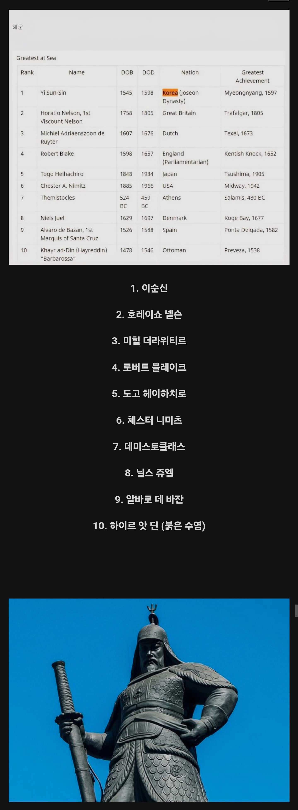

레딧 밀덕들이 뽑은 역대 해군 명장 순위 ㄷㄷ
댓글
전과만 좋은게아니고 생산 파밍 경영까지 GOAT 찍음ㅋㅋㅋㅋㅋㅋㅋ
예전에는 넬슨이 1위 이순신 2위 였는데 좀더 알려졌나보네
이순신은 거의 민족 메시아급이지
순신이형 휘귀자임 그거 제외하고 말이 안됨
신 순 갓
이순신 장군의 진가는 전투 뿐만아니라
전남지역에 독자적인 경제체계를 구축해서 자력으로 생산 보급 전투를 수행한 미친 행정력이지 ㄷㄷ

전과만 좋은게아니고 생산 파밍 경영까지 GOAT 찍음ㅋㅋㅋㅋㅋㅋㅋ
예전에는 넬슨이 1위 이순신 2위 였는데 좀더 알려졌나보네
이순신은 거의 민족 메시아급이지
순신이형 휘귀자임 그거 제외하고 말이 안됨
신 순 갓
이순신 장군의 진가는 전투 뿐만아니라
전남지역에 독자적인 경제체계를 구축해서 자력으로 생산 보급 전투를 수행한 미친 행정력이지 ㄷㄷ
그래서 후대 장군들이 전부다 이순신에게 비교당했다는게.....